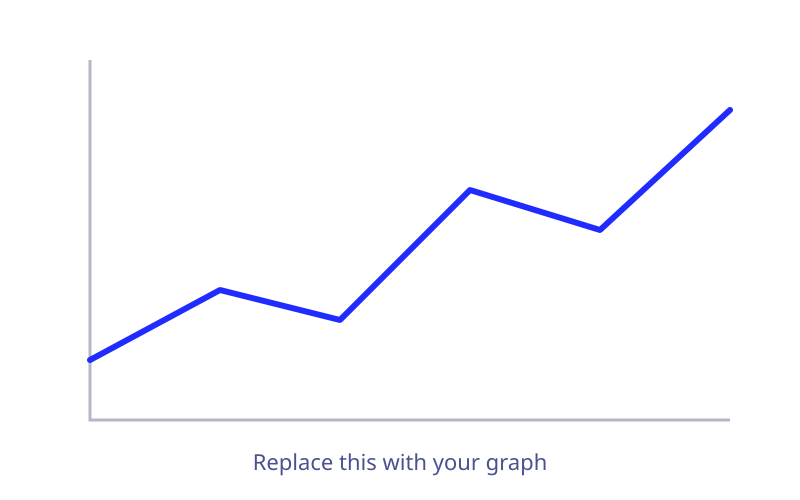

Title of this result
Explain what the graph shows and what a reader should notice first.
Add anomalies, patterns or observations you found in the data here.
Title of this result
Explain what the graph shows and what a reader should notice first.
Add anomalies, patterns or observations you found in the data here.
Anomalies, observations and patterns
- Anomaly: An analytical anomaly occurs between the SITTING and STANDING activities. Although they are structurally distinct physical states, their inertial sensor profiles (especially acceleration magnitudes) overlap heavily.
- Anomaly: Even static activities can identify a person to some extent. Accuracy is 51–65%, which is about 15–20 times better than random guessing across 30 people (3.3%).
- Observation: The data is clean: 10,299 windows, 561 features, 30 subjects and 6 activities, with no nulls or duplicates.
- Observation: The model needs only about 60–83 seconds of data per person per activity.
- Pattern: Movement reveals identity. Person-identification accuracy jumps about 40 percentage points from still to moving activities, because each person has a distinctive gait.
- Pattern: Gait signatures hold across stair direction. The plots for going upstairs and downstairs differ in shape, but each person remains recognizable in both.